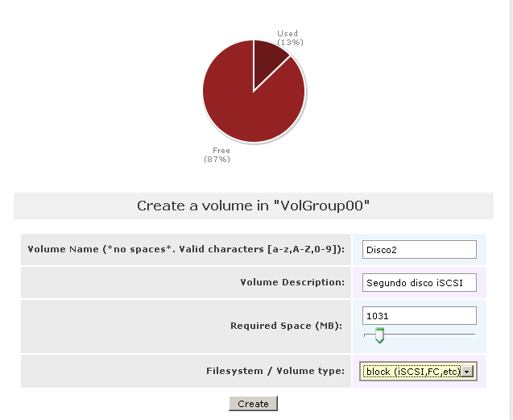
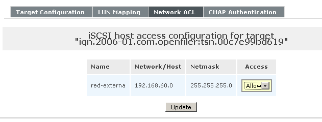
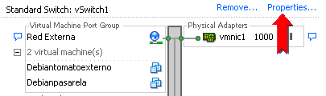
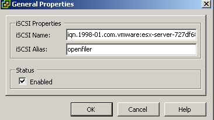
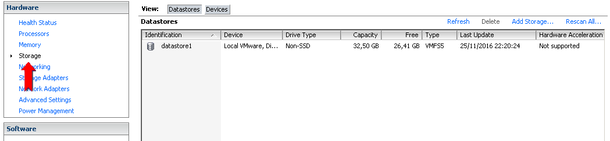
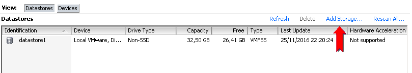
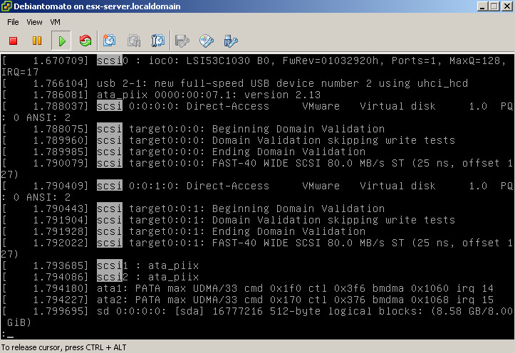

En las prácticas que hemos realizado hasta ahora, las
máquinas virtuales han usado unidades de disco virtuales que
estaban alojadas en el disco duro del propio hipervisor. El problema de
usar este almacenamiento interno del hipervisor es que el precio de los
servidores aumenta drásticamente con el número de
alojamientos para discos internos que posean.
Por esta razón resulta interesante explorar el uso de
configuraciones que permitan proporcionar al hipervisor un
almacenamiento de disco externo que pueda ser usado desde las propias
máquinas virtuales; así, por ejemplo, un sistema
de producción podría usar un hipervisor
económico con mucha memoria y muchos cores pero
con sólo dos discos internos (el disco de sistema, en RAID1), y
darle todo el espacio de disco necesario para las máquinas
virtuales desde un sistema externo. Hay dos posibilidades para este
almacenamiento:
Usar un arcón de discos externos, conectado al
hipervisor por Fibre Channel o SAS (Serial Attached SCSI). Es la
opción más eficiente, pero requiere que el
servidor tenga una HBA FC o SAS, y si el servidor es muy delgado (por
ejemplo, de 1U) puede ser problemático el disponer de un
slot de expansión libre donde conectar la tarjeta.
Usar un servidor SAN o NAS, que proporcione acceso a su
disco a través de la red IP, empleando los protocolos iSCSI
(SAN) o CIFS/NFS (NAS). Esta configuración es algo menos
eficiente que la anterior, pero tiene la ventaja de que puede montarse
usando tan sólo los interfaces de red Ethernet que traiga de
fábrica el servidor del hipervisor.
En esta práctica vamos a ver un ejemplo de esta segunda
opción; concretamente, vamos a configurar un servidor Linux
para que proporcione, simultáneamente:
un servidor iSCSI que, a través de un Target
iSCSI, exporte unidades de disco para E/S de bloques (Block I/O) tanto
a un Windows XP como al hipervisor ESX (e, indirectamente a
través de él, a uno de los servidores Debian que
alberga).
un servidor NAS que exporte una carpeta compartida a un
Windows XP (vía protocolo CIFS) y a un servidor Debian
dentro del ESX (vía protocolo NFS), permitiendo el acceso
simultáneo y coherente desde ambas máquinas.
Como servidor SAN/NAS vamos a usar un appliance (máquina
preinstalada lista para usar) Openfiler, compuesto por un servidor
CentOS sobre el que residirá el paquete open source
Openfiler.
Como muestra la figura, el servidor Openfiler va a estar implementado
sobre una máquina virtual que corre sobre el VMware
Workstation, y estará conectada al servidor ESX y a
XPexterno a través de la red virtual VMnet3.
2 Implementación
Para realizar la práctica seguiremos estos pasos:
1) Arrancar la máquina virtual Openfiler proporcionada. La
instalación de este servidor Openfiler se ha hecho siguiendo los
pasos descritos en su guía de Administración,
excepto que el particionado del disco se ha realizado durante la
instalación (porque el particionador incluído con
el propio sistema de administración de Openfiler no funciona
con el disco de la máquina virtual). Las figuras muestran la
configuración usada para esta particionado, así
como la dirección IP asignada a este servidor (192.168.60.70).
Finalmente, la contraseña del usuario root es, como de
costumbre, deii15.
La
máquina virtual Openfiler está conectada a la red
virtual VMnet3 que se ha usado en el Ejercicio 6. Para administrar el
servidor Openfiler vamos a usar la máquina XPexterno, que
está también conectada a esa misma red virtual.
Como también usaremos XPexterno
para demostrar el uso del iniciador iSCSI, lo reseteamos a su estado
inicial.
2) En el
Workstation, abrir la máquina virtual XPexterno y, sin
arrancarla, usar el administrador de instantáneas para
revertirla a la instantánea Inicial. Arrancar
XPexterno.
3) En
XPexterno, arrancar Firefox y abrir la URTL https://192.168.60.70:446
.Aceptar las advertencias de seguridad, e instalar
permanentemente el certificado. Hacer login con la
identificación por defecto (nombre de usuario openfiler, password password).
4) El primer
paso será
crear los dos volúmenes de datos que exportaremos como
discos
SCSI, es decir, como LUNs de una diana iSCSI, accesibles mediante Block
I/O. Para ello, pulsar en la pestaña Volumes y
seleccionar Add Volume.
5) Crear el
volumen con los datos mostrados en la figura.
6) Repetir
el procedimiento para añadir un segundo volumen, con los
datos mostrados en la figura.

Tras ejecutar estas dos operaciones obtendremos el resultado mostrado
en la figura, con los dos espacios de disco listos para exportar como
LUNs SCSI.
7) Ahora,
crearemos la Diana (Target) iSCSI a través de la cual
ofreceremos estas LUNs. Continuamos en la pestaña Volumes, y pulsamos
sobre iSCSI Targets.
Como veremos al aparecer la nueva pantalla, la gestión del
Target iSCSI está deshabilitada; la razón es que,
por defecto, el servidor Openfiler tiene deshabilitado el servicio que
proporciona la funcionalidad de iSCSI.
8) Para
activarlo, pulsamos sobre la pestaña Services, y
modificamos el estado del servicio iSCSI
Target, seleccionando Enabled
y Start.
9) Volvemos
a la pestaña Volumes
y seleccionamos iSCSI
Targets. Como vemos, el sistema nos ha creado un
identificador único (Target
IQN) para la diana. Aunque se puede cambiar manualmente,
este identificador garantiza su unicidad, así que vamos a
usarlo sin modificaciones. Pulsamos Add.
10) Pulsamos
sobre la pestaña LUN
Mapping para acceder a la ventana en la que podremos
asociar los volúmenes de disco con LUNs ofrecidas desde esta
diana. Configurar los dos volúmenes de disco con los
parámetros mostrados en la primera figura, y pulsar para
cada uno Map,
lo que
dará como resultado la asignación de LUN IDs
mostrada en la segunda figura (NOTA: En esta segunda figura hay una errata, ya que el modo de R/W será write-back).
Para que las LUNs sean visibles desde la red deberemos
también configurar las ACLs (Access Control List = Listas de
Control de Acceso), es decir, el cortafuegos del servidor
Openfiler. El sistema Openfiler utiliza identificadores de subredes
para gestionar las ACLs, por lo que necesitamos crear estos
identificadores antes de poder usarlos en las ACLs del servidor iSCSI.
11) En la
pestaña System,
añadir un identificador de subred usando la
configuración mostrada en la fgura, y pulsar Update.
12) Volver a
Volumes -> iSCSI
Targets, y pulsar en la pestaña Network ACL. Cambiar
a Allow el
permiso de acceso para la red red-externa,
y pulsar Update.

13) Pulsando
en la pestaña CHAP
Authentication, vamos a crear un usuario y password para
hacer más seguro el acceso. El estándar iSCSI
exige que el password CHAP tenga al menos 12 caracteres, así
que añadiremos el usuario practicas con
password deii15deii15
y perfil Incoming User,
como muestra la figura.
14) Una vez
finalizada la configuración del target iSCSI, hacemos Log Out del interfaz
administrativo de Openfiler, y cerramos Firefox.
Ahora, instalamos en XPexterno el software que proporciona un iniciador
iSCSI, con el cual podremos montar desde el XP los discos iSCSI
ofrecidos por Openfiler a través de la red (NOTA: En Windows 7 y posteriores
el iniciador iSCSI ya viene con el sistema operativo, aunque
sólo en las versiones profesionales de Windows).
15)
Arrastrar al XP el fichero D:\practicas\MV\Windows_iSCSI_initiator\Initiator-2.08-build3825-x86fre.exe
.Ejecutarlo, aceptando las opciones por defecto.
16) Abrir el
iniciador iSCSI usando el acceso directo que aparecerá en el
escritorio de XPexterno.
17) En la
pestaña Discovery,
pulsar Add
e instroducir la dirección 192.168.60.70.
18) Pulsando
sobre la pestaña Targets
podemos ver que el iniciador iSCSI ha escaneado
automáticamente al servidor iSCSI en la dirección
IP y puerto proporcionados, y ha descubierto la presencia del Target
iSCSI que hemos definido en Openfiler.
19)
Necesitamos conectarnos al servidor para poder usar el Target iSCSI
descubierto. Para hacerlo, pulsamos el botón Log On, y OK en la ventana que
aparecerá. Como hemos configurado en Openfiler una
autenticación CHAP asociada al Target iSCSI, obtendremos un
fallo de autentificación.
20) Para
introducir los valores de la autenticación CHAP, pulsamos el
botón Advanced,
y rellenamos los campos de logon CHAP con el nombre de usuario practicas y el
password deii15deii15.
Pulsar Aceptar,
y lueg OK.
El estado del Target pasará a Connected
21) Pulsando
en Details
se abrirá una ventana en la que podremos acceder a
información detallada acerca de las LUNs ofrecidas por este
Target iSCSI. En particular, pulsando en la pestaña Devices podemos
comprobar que el Target iSCSI nos está ofreciendo dos discos
iSCSI. Si seleccionamos cualquiera de ellos, y pulsamos Advanced,
obtendremos información de bajo nivel acerca de ese disco,
de la que la más interesante es el número de LUN
que declara ese disco, que será el mismo número
de LUN que le hemos asignado al hacer el LUN-Mapping en Openfiler.
22) Una vez
que nos hemos conectado al Target iSCSI, cerramos la ventana del
iniciador iSCSI pulsando Aceptar.
Ya tenemos visibles los dos discos iSCSI pero, si pulsamos sobre Mi PC, comprobaremos
que estos dos discos no nos aparecen todavía como unidades
de disco accesibles al usuario. Para poder usarlos necesitamos primero
inicializarlos usando el administrador de discos del XP.
23) Pulsar
sobreMi PC y
usar el botón derecho para invocar el menú Administrar. Pulsar
sobre Administracion de
discos. Como hay discos sin inicializar (los discos
iSCSI), se abrirá la ventana del Asistente para inicializar
discos. Como queremos gestionar de forma totalmente manual los discos,
pulsaremos Cancelar.
Se abrirá entonces la ventana del Administrador de discos,
donde podemos ver que hay dos discos sin inicializar, cada uno de ellos
de 1020 MB.
24) Si
pulsamos sobre la etiqueta del Disco
1 y, con el botón derecho, invocamos el
menú Propiedades,
podemos comprobar que se trata de la LUN 0 del Target iSCSI ofrecido
por el servidor Openfiler. Pulsar Cancelar
para volver.
Ahora vamos a inicializar sólo el Disco 1 para usarlo desde
el XP. NO
debemos inicializar el Disco 2, porque tiene como propósito
ser usado en otra máquina distinta, y como no estamos usando
software de clustering no
podemos usar un mismo disco SCSI, accedido en modo Block I/O, desde dos
máquinas distintas; si lo hiciéramos,
sufriríamos inevitablemente una corrupción de
datos.
25)
Seleccionando la etiqueta del Disco
1, invocamos con el botón derecho el
menú Inicializar
disco. Se abrirá una ventana en la que se nos
ofrece elegir los discos a inicializar; seleccionar sólo Disco 1, y pulsar Aceptar.
26) Una vez
inicializado, seleccionar el espacio no asignado de Disco 1 y, con el
botón derecho, crear una nueva partición. Aceptar
los parámetros por defecto del particionador, excepto en la
ventana de parámetros de formateo, donde seleccionaremos la
opción dar
formato rápido. Pulsar Finalizar.
27)
Cerramos el administrador de discos, y comprobamos que ahora tenemos
accesible un nuevo disco duro, de 1 GB de tamaño, en la
unidad lógica F.
28)
Reiniciar XPexterno
Tras terminar el arranque del sistema operativo, comprobaremos que el
disco SCSI no se ha conectado y montado automáticamente. En
este ejercicio ese es, precisamente, el comportamiento que
deseamos (montaje bajo demanda). Sin embargo, si quisiéramos
configurar el sistema para que el disco iSCSI sí sea montado
en el arranque lo podemos hacer en la ventana de Log-on del iniciador
iSCSI, marcando el flag de montaje automático tras el
arranque, lo que también dejaría almacenada la
información de autentificación CHAP.
29) Volver a
conectar el Target iSCSI usando el iniciador iSCSI. No olvidar
introducir la información de autentificación
CHAP. Comprobar que el disco F vuelve a ser visible.
Ahora vamos a configurar el servidor Openfiler para que
(además de como servidor iSCSI ofreciendo una LUN para E/S
de bloque) opere también como servidor NAS, que
ofrecerá un volúmen de disco compartido por red
vía protocolo CIFS (es decir, una carpeta compartida de
Windows).
30) Abrir el
Firefox y hacer login de nuevo en la herramienta de
administración de Openfiler.
31) Pulsando
sobre la pestaña Volumes,
creamos en el servidor Openfiler el volumen de disco que compartiremos
por red. Pulsar Add
Volume, y crear un nuevo volumen con los
parámetros mostrados en la figura.
Tras crear este nuevo volumen, el espacio de almacenamiento en el grupo
de volúmenes LVM del servidor Openfiler ha quedado como se
muestra en la figura.
Observar que, a diferencia de los volúmenes disco1 y disco2(que son
exportados como dispositivos de bloques para ser usados como discos
SCSI), el volumen discocifs
sí es gestionado usando un sistema de ficheros (Ext4) en el
propio servidor Openfiler. Es la presencia de este sistema de ficheros,
junto con el software de exportación CIFS/NFS, lo que
permitirá a este volumen ser accedido de forma
simultánea y coherente desde diversos ordenadores.
32) Ahora
vamos a activar los servicios de compartición por red.
Pulsando sobre la pestaña Services, activar y
arrancar los servicios CIFS
Server y NFS
Server.
33) Pulsar
ahora sobre la pestaña Shares.
Podemos observar que el volumen discocifs
ya está listo para configurar (ignorar el aviso solicitando
crear un nuevo volumen de sistema de ficheros).
34) Vamos a
crear un subdirectorio en el volumen, para luego exportarlo como Share.
Pulsar sobre Disco para
CIFS. Introducir CarpetaCompartida
como nombre de folder, y pulsar Enter
o Create Sub-folder.
Comprobar que se ha creado el subdirectorio especificado, tal como
muestra la figura.
35) Pulsar
sobre CarpetaCompartida.
Se abrirá una ventana; pulsar Make Share.
Supongamos que nuestro objetivo es que el directorio CarpetaCompartida
sea un espacio común, no seguro, para el intercambio, dentro
de una oficina, de ficheros no confidenciales. Vamos a configurar el
share con los parámetros que proporcionen esta funcionalidad.
36) Una vez
abierta la ventana de configuración del share, seleccionamos
como modo de control Public
guest access, y pulsamos Update.
37) Ahora
vamos a exportar este directorio en modo RW (para que pueda ser
leído y escrito), y, además, lo exportaremos
simultáneamente a través del protocolo CIFS (para
su uso desde Windows) y a través del protocolo NFS (para su
uso desde Unix). En la sección Host access configuration
marcar la opción RW,
tanto para CIFS como para NFS, y pulsar Update.
Vamos a comprobar el resultado de exportar por NAS esta carpeta;
comenzaremos en XPexterno, en el que será accedida usando el
protocolo CIFS.
38) En el
menú Inicio de
XPexterno, ejecutar \\192.168.60.70
.Aparecerá rápidamente una ventana con los
recursos compartidos por el servidor Openfiler, en la que veremos el
share CIFS CarpetaCompartida.
Entrar en la carpeta, y copiar a ella la carpeta C:\jfilesync
completa.
Ahora, comprobaremos el resultado de la exportación NAS por
NFS. Para ello necesitamos una máquina Linux conectada a la
misma subred que Openfiler; vamos a usar por ello el servidor Debianpasarela, que
hemos desplegado en el hipervisor ESX en la Práctica 7, por
lo que necesitamos arrancar tanto el ESX como el XP de
administración.
39) Arrancar
la máquina virtual ESX.
40) Una vez
termine su inicialización, arrancar XPadmin y abrir la
herramienta de administración del ESX.
41) Desde la
herramenta de administración, arrancar el servidor Debianpasarela, y
abrir su ventana de consola.
42) Hacer
login como root
en Debianpasarela.
43)
Crear el punto de montaje para la carpeta compartida, ejecutando mkdir /compartida
44) Como
queremos que la carpeta sea pública, hacemos chmod 777 /compartida
para darle permisos RW a todos (NOTA:
en una red no 100% segura, dejar un directorio con estos permisos es
una MUY mala idea).
Vamos a suponer que queremos usar este directorio exportado por NFS
montándolo bajo demanda, sólo cuando vayamos a
usarlo; ésto se hace empleando el comando UNIX mount, con los
parámetros adecuadso (NOTA:
Si quisiéramos que el montaje del directorio NFS se haga
automáticamente ya desde el arranque de Debianpasarela, lo
haríamos modificando el fichero /etc/fstab,
añadiendo la línea con los parámetros
de montaje del share NFS).
45) Para el
comando mount
necesitamos saber la ruta con la que Openfiler exporta la carpeta CarpetaCompartida.
Podemos ver esta ruta en la pestaña Shares, en el
título Edit
share...
46) Podemos
ver esta ruta también en el fichero de
configuración de la exportación NFS del Openfiler
(y, de paso, ver qué es lo que cambiamos desde la
aplicación gráfica). Hacer login como root en el servidor
Openfiler y ejecutar more
/etc/exports .La salida nos muestra la ruta con que se
está exportando la carpeta, la ACL que limita su visibilidad
a la subred 192.168.60.0, y las opciones de exportación NFS,
cuyo significado puede encontrarse en la página man de nfs(5).
47) Volver
ahora a la consola de Debianpasarela, y ejecutar mount -t nfs
192.168.60.70:/mnt/VolGroup00/discocifs/CarpetaCompartida
/compartida .Ejecutar df -h para comprobar
que el sistema de ficheros NFS ha sido montado.
48) Ejecutar
cd /compartida,
y luego ls -l
.Comprobaremos que desde este Linux podemos ver, vía NFS, el
subdirectorio jfilesync
que hemos copiado desde el Windows vía CIFS.
49) Ejecutar
cp /etc/hosts.
El fichero hosts
del servidor Debianpasarela se copiará a la carpeta
compartida NFS. Comprobarlo ejecutando ls -l.
50) Volver
ahora a XPexterno y comprobar que, en la carpeta compartida CIFS, ahora
es visible el fichero hosts.
Abrirlo con Textpad para comprobar su contenido. Cerrar el editor sin
modificar el fichero.
51) Ahora,
ir a la consola de Openfiler y ejecutar ls -l /mnt/VolGroup00/discocifs/CarpetaCompartida
.Este es, realmente, el volumen de disco y sistema de ficheros (Ext4)
donde residen físicamente los ficheros contenidos en la
carpeta exportada por NAS.
Finalmente, vamos a ver cómo podemos acceder a los discos
iSCSI exportados por el servidor Openfiler desde las
máquinas virtuales desplegadas en el interior del servidor
ESX. Existen dos posibles formas de acceder a estos discos:
Si una máquina virtual tien enrutamiento por red
hasta Openfiler, y tiene instalado un iniciador iSCSI, puede montar
directamente las LUNs ofrecidas por el Target iSCSI. Sin embargo, en
nuestro sistema no tenemos ninguna máquina virtual Debian
que tenga instalado el iniciador iSCSI, luego esta forma no nos vale.
La segunda alternativa es usar el iniciador iSCSI del
propio ESX para montar las LUNs del Target iSCSI de Openfiler, y
ofrecer entonces desde el hipervisor este espacio de disco a las
máquinas virtuales como un datastore del ESX. Esta
opción es menos eficiente que la anterior (al tener otro
nivel más de indirección), pero en este caso es
la única posible.
Vamos a comenzar creando en Openfiler un nuevo volumen de disco que
mapear a una LUN (necesitamos
hacerlo porque un datastore ESX necesita al menos tener 1,3 GB de
tamaño en disco, y las LUNs que hemos exportado al XP
tenían sólo 1 GB).
52) En la
herramienta de administración de Openfiler, pulsar sobre la
pestaña Volumes,
seleccionar Add Volume,
y crear un nuevo volumen con los siguientes datos:
53) Pulsar iSCSI Targets, ir a
la pestaña LUN
Mapping, y pulsar Map
en el Disco para
datastore que acabamos de crear, de forma que quede
exportado como LUN 2.
54) Ir
a XPadmin, apagar Debianpasarela con telinit 0 y cerrar
su consola. En la columna de inventario, seleccionar el servidor 10.0.0.60.
55) Pulsar
la pestaña Configuration,
y seleccionar Networking.
56) Para
poder usar el iniciador iSCSI contra Openfiler tenemos que agregar al
conmutador virtual vSwitch1
un VMkernel
(es decir, una pila de protocolo TCP/IP). Pulsar en Properties de vSwitch1.

57) En la
pestaña Ports,
pulsar Add.
Añadir un VMkernel.
Pulsar Next.
58)
Configurarlo con el nombre RediSCSI,
como muestra la figura. Pulsar Next.
59)
Configurarlo con la dirección 192.168.60.90/255.255.255.0 .Pulsar
Next, y
luego Finish.
Confirmar que no queremos configurar la pasarela por defecto.
60) Cerrar
la ventana de propiedades del vSwitch1, pulsando Close, y pulsar Storage Adapters.
61) Si no
existiera, añadir un iSCSI
Software Adapter, y pulsar en Properties.
62) Pulsar Configure. Habilitar
el iniciador iSCSI, y darle como alias openfiler. Pulsar OK. (NOTA: Si al habilitar el
iniciador sale un mensaje pidiendo reiniciar el ESX, hacerlo).

63) En la
pestaña Network
Configuration, añadir un VMkernel Port Binding
asociado al VMkernel RediSCSI
64) En la
pestaña Dinamic
Discovery, añadir el servidor iSCSI 192.168.60.70, y
configurar la autentificación CHAP con el username practicas y el
password deii15deii15.
Pulsar OK.
65) Cerrar
la ventana de propiedades del iniciador iSCSI. Aceptar el hacer un
Rescan del HBA (es decir, buscar los Targets iSCSI visibles a
través de la tarjeta de red vmnic1).
66) Si la búsqueda del
Target iSCSI, y la conexión al mismo, tienen éxito, deben
aparecernos explícitamente, en los detalles del adaptador iSCSI,
las tres LUNs exportadas por el Target iSCSI de Openfiler.
67) Ahora, pulsamos en la opción Storage para irnos a la ventana donde configuraremos el nuevo datastore del ESX.

68) Pulsamos Add Storage para abrir el asistente que nos ayudará a añadir el datastore.

69) Añadimos un Disk/LUN, y pulsamos Next.
70) Seleccionamos la LUN 2 (IMPORTANTE: NO
debemos seleccionar la LUN 0, porque es el disco que ya está en
uso como unidad F: en XPexterno; si la usamos, corromperemos
inevitablemente sus datos). Pulsamos Next.
71) Elegir VMFS-5 como sistema de ficheros para el datastore, y pulsar Next dos veces.
72) Dar al datastore el nombre Disco2Lun1, y pulsar Next.
73) Elegir para el datastore la capacidad del disco al completo, y pulsar Next, y luego Finish.
Como resultado, deberemos obtener un listado de datastores accesibles en el ESX similar al mostrado en la figura.
Ahora, vamos a cambiar los settings de uno de los servidores Debian
desplegados en el ESX para añadirle un nuevo disco duro, alojado
en el datastore iSCSI.
74) En la columna de inventario del ESX, seleccionar el servidor Debiantomato y abrir la ventana de edición de sus Settings (en la pestaña Summary, o usando el botón derecho).
75) Pulsar Add, y añadir un disco duro. Pulsar Next.
76) Crear un nuevo disco virtual, y pulsar Next.
77) Dar al disco 0,5 GB de tamaño, y crearlo como disco thin. Seleccionar que se almacene en el datastore Disco2Lun1. Pulsar Next.
78) Elegir SCSI como tipo de disco, y pulsar Next, seguido de Finish y OK.
79) Arrancar Debiantomato y abrir su ventana de consola. Hacer login como root.
80) Ejecutar less /var/log/dmesg para ver el contenido del fichero donde se guardan los mensajes generados por el kernel durante el arranque.
81) En less, escribir /scsi para buscar las cadenas de texto que contengan scsi;
como resultado, avanzaremos hasta el punto donde se produce el escaneo
del bus SCSI por la tarjeta virtual SCSI, y la detección de los
dos discos virtuales SCSI.

82) Pulsando una vez la barra
espaciadora llegamos a los mensajes donde vemos cómo a estos
discos SCSI se les asignan los devices sda y sdb También podremos ver cómo el disco sda (el de sistema) sí está particionado (en sda1, sda2 y sda5), mientras el disco sdb todavía no lo está.
83) Si ejecutamos fdisk /dev/sdb,
vemos que la herramienta de particionado nos deja trabajar sobre el
disco virtual proporcionado vía iSCSI como si fuera realmente un
disco local interno. Pulsar q para salir sin modificar la tabla de particiones.
A partir de este punto el proceso de preparación de del disco
(particionarlo, crearle un sistema de ficheros e incluirlo en fstab
con su punto de montaje) es ya el mismo que en un Linux convencional
con un disco interno (proceso que ya debe ser conocido de otras
asignaturas), luego no vamos a realizarlo.
84) Finalizar la
práctica apagando ordenadamente las máquinas
(Debiantomato, el ESX, los dos XP y, finalmente, Openfiler).